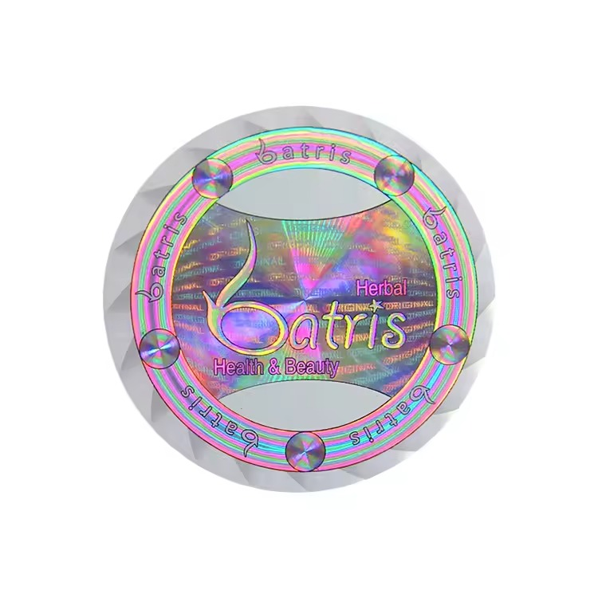

Beauty packaging asks a label to communicate texture, quality and brand personality in a few seconds. Holographic material can help, especially for launches, gift sets, limited editions and products that need a visual authentication signal. It should not make the shopper hunt for the product name, shade, volume or instructions.

Choose where the holographic effect belongs
There are three common directions. Full holographic film makes the whole label active and bold. A holographic accent keeps the core label calm while highlighting a logo, border or icon. A separate holographic seal adds premium detail and can sit across a box closure or cap connection. The right choice depends on how much reading the pack requires.
| Full holographic label | Best for a highly expressive, minimal-copy design with strong product recognition at the front. |
|---|---|
| Holographic accent | Useful when the product name, shade or directions need a quieter background but the brand still wants depth. |
| Separate seal | Works for box closures, gift sets and limited releases where the effect should be visible before opening. |
| Holographic code panel | Possible for authentication, but keep codes and variable data on a high-contrast, scan-friendly area. |
Respect the container shape
Cosmetic jars often have a short vertical label panel. Serum bottles can have a narrow curved circumference. Pump bottles introduce shoulders and molded details. Before designing the effect, use the real container dimensions or photos to identify where a label can sit flat, where it will curve and what will be visible on shelf.


Keep product information on the calm part of the label
Fine ingredient text, usage directions, barcode areas and shade names are easiest to read over a stable background. Let the holographic layer carry the emotion: a logo, a frame, a side panel, a starburst or a defined security element. This combination often looks more deliberate than printing every line over a moving reflective surface.
Cosmetic holographic label checklist
- Container photos and usable label panel dimensions
- Product name, shade or variant hierarchy
- Which content must stay easy to read at normal handling distance
- Whether the holographic finish is full coverage, an accent or a separate seal
- Barcode, QR, batch or serial field placement
- Matching box, carton or gift-set packaging requirements
Use the proof to judge balance, not only color
Review a proof for the relationship between effect and function. Is the logo easy to find? Does the product name still read when the pack is tilted? Are small lines protected from glare? Does the effect continue around a seam in a way that looks intentional? A proof helps settle these questions before you commit to a full custom run.
Make the finish work for the beauty brand
Send your bottle, jar or box photos with artwork or a reference direction. RP can help turn the design into a print-ready holographic label and digital proof.
Chat on WhatsAppFAQ
Can I use holographic labels on skincare bottles?
Yes. Confirm the bottle surface, label panel and the amount of small text before choosing a full or partial holographic treatment.
Will a holographic label look the same under every light?
No. Its visual effect changes with viewing angle and lighting, which is why important information should not depend on the reflective area for readability.
Can a holographic finish be combined with a matching carton?
Yes. A bottle or jar label and outer carton can share the same visual system while using different finishes based on their surfaces and information needs.